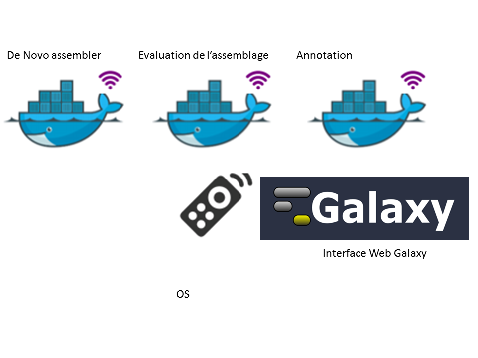
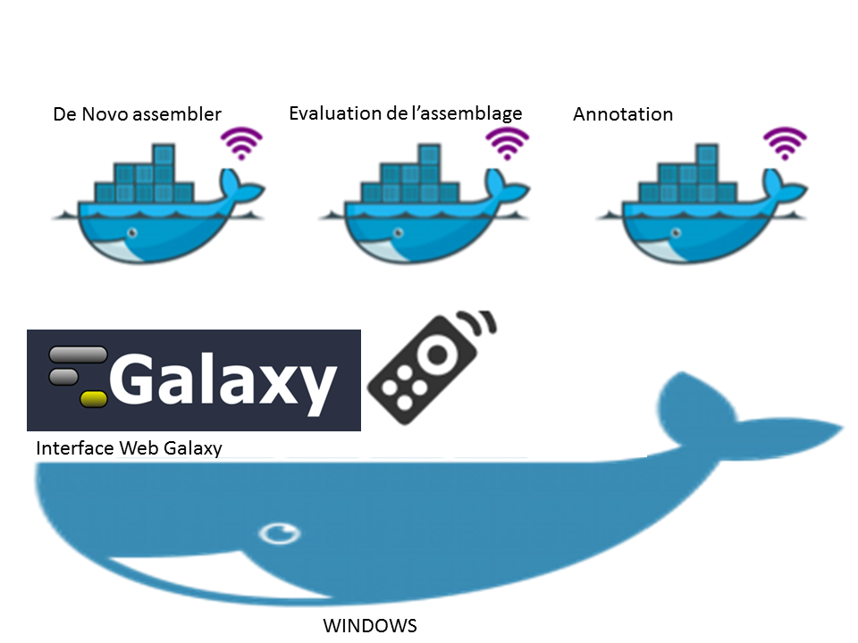
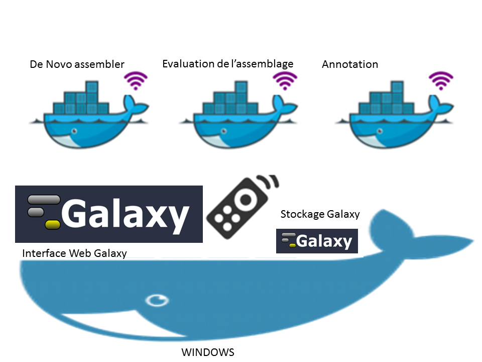

Hello, your Galaxy Docker container is running! |

|
| Il s'agit d'une interface galaxy qui permet de lancer plusieurs outils avec gestion d'historique et de données | 
|
| Docker est un utilitaire qui permet de lancer des outils dans des containers | 
|
| Cette instance Galaxy commande des container docker dans lesquelle sont contenu les différents programme à lancer |

|
| Cette instance Galaxy est elle même lancer à partir d'un container docker |

|
| Les données sont sauvegardées dans un second docker de stockage ce qui permet de mettre indépendament à jour le systeme galaxy tout en conservant l'état du Galaxy courant |

|